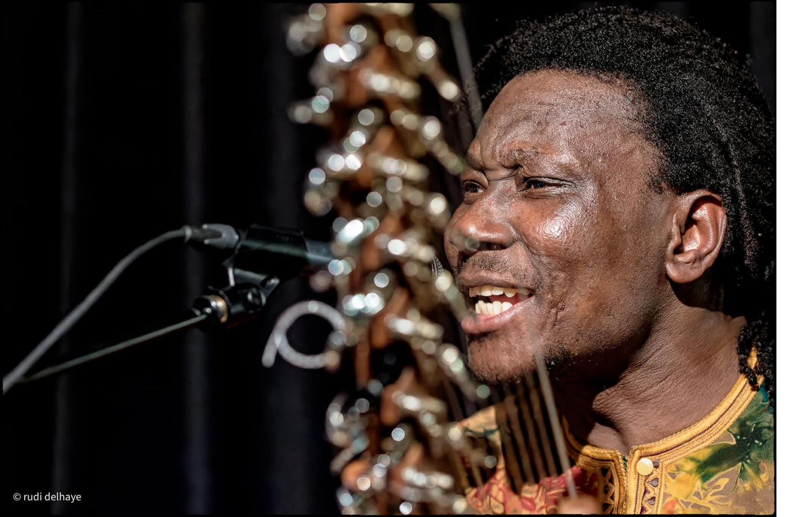
SOLO — 21-STRING KORA
Solo Kora
An intimate solo set on the West African harp-lute — meditative, melodic, ideal for receptions, ceremonies and listening rooms.
Book this project →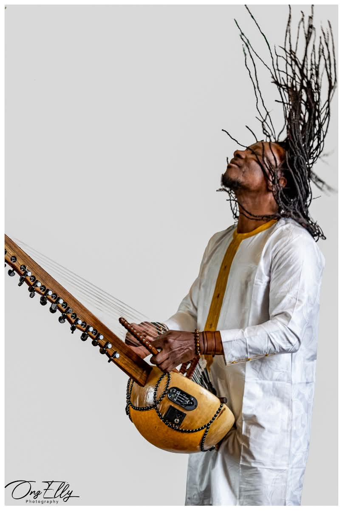
Griot tradition · Burkina Faso → Gent
Kora, balafon, djembé & n'goni — tradition carried into jazz, rock, psychedelia and free improvisation.
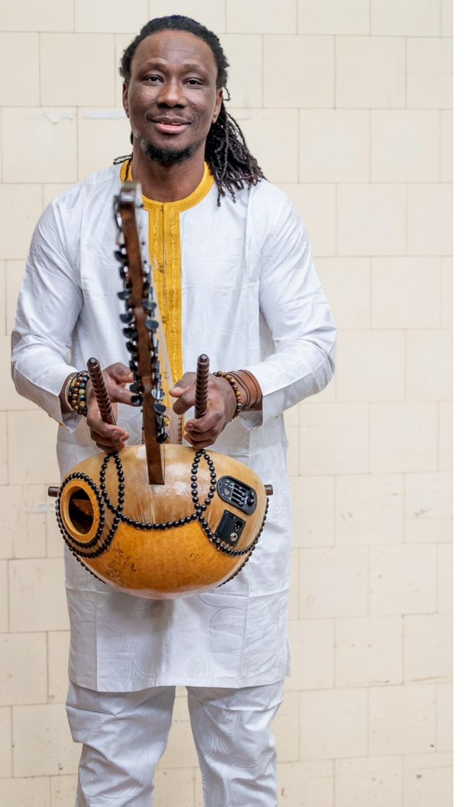
Biography
Moussa Dembélé is a charismatic multi-instrumentalist from Burkina Faso, whose musical roots lie deep in the griot tradition of his homeland. Raised in a family of storytellers and musicians, Moussa brings mastery and soul to every instrument he touches — from balafon and kora to djembé and n'goni.
Based in Gent, Belgium, he blends age-old tradition with jazz, rock, psychedelia and free improvisation — performing solo, in intimate duos, and within full bands across Belgium and beyond.
Solo & collaborations
From an intimate solo kora set to a full band — pick the format that fits your stage.

SOLO — 21-STRING KORA
An intimate solo set on the West African harp-lute — meditative, melodic, ideal for receptions, ceremonies and listening rooms.
Book this project →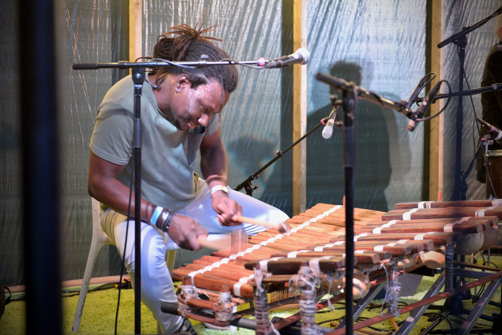
SOLO — BALAFON
Rolling, percussive melodies on the wooden xylophone of the griot masters — warm, danceable, and rooted in tradition.
Book this project →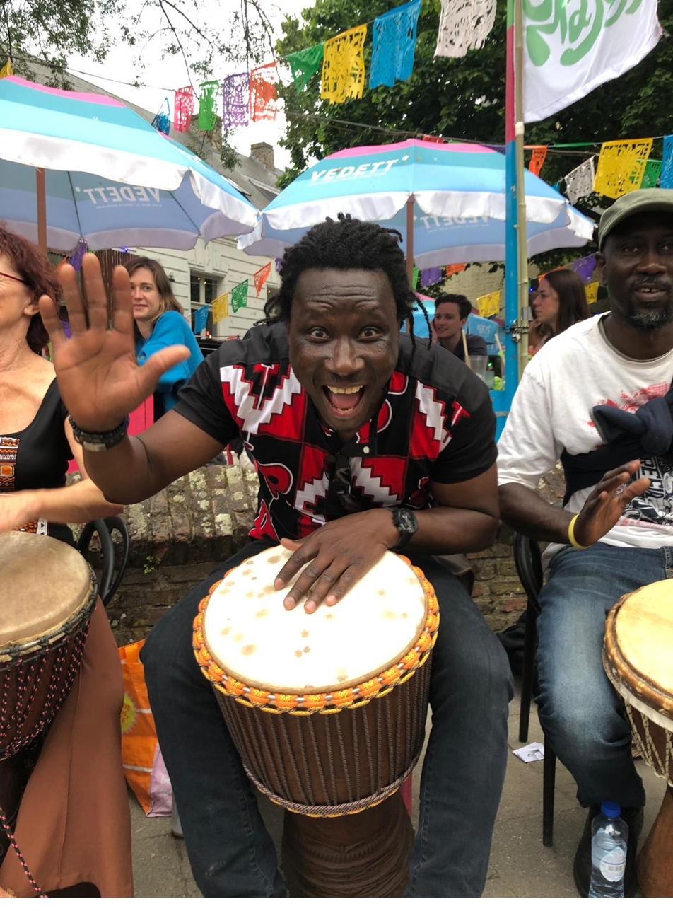
SOLO — PERCUSSION
Djembé, calabash and talking drum — high-energy rhythm for festivals, walkabouts, workshops and drum circles.
Book this project →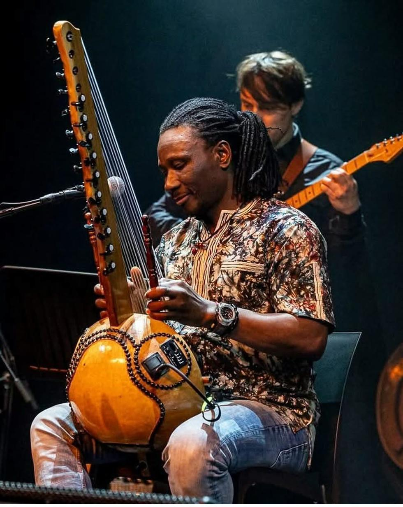
TRIO
Moussa's core trio project — kora, balafon and song woven together with a full band sound for stages large and small.
View on Facebook →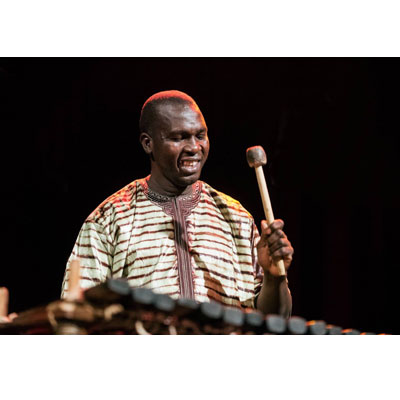
DUO
A duo with Lassana Diabaté, internationally acclaimed balafón virtuoso, composer and culture-bearer from a renowned Guinean griot family, whose collaborations span jazz, blues and Latin music and include several Grammy-nominated albums.
Book this project →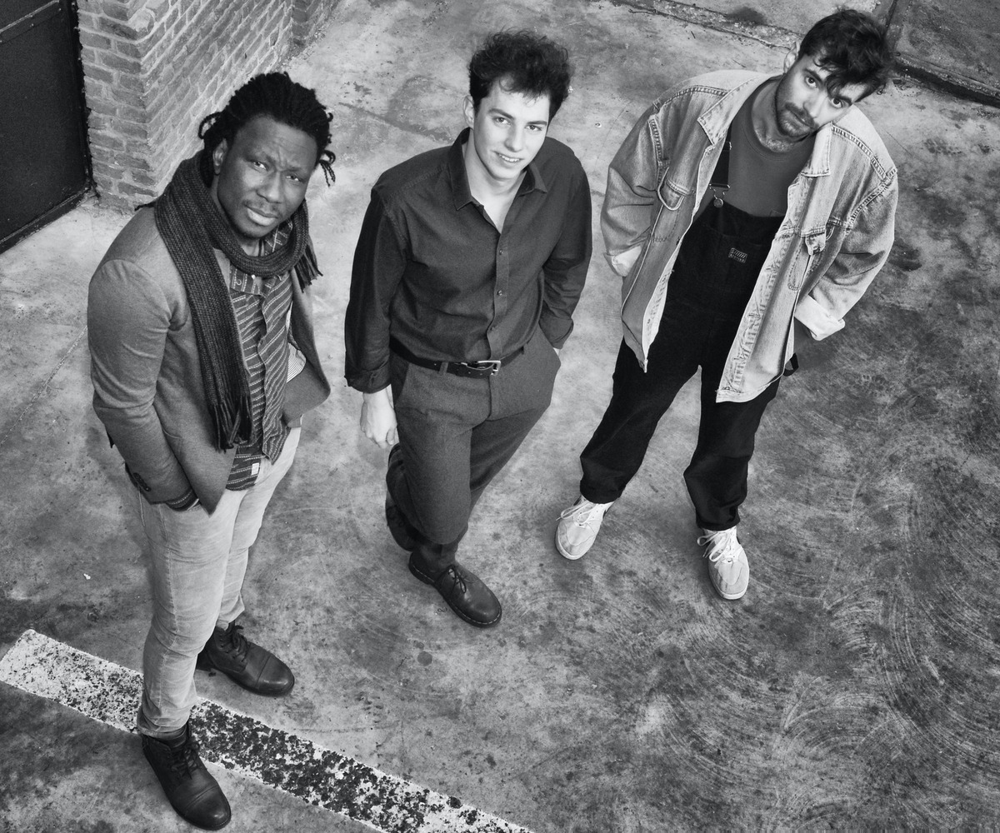
TRIO — SAMFI
Samfi — meaning "honour your loved one" — carries Burkinabé rhythms and stories into danceable, self-styled grooves. Moussa Dembélé (kora, balafon & vocals), Arno Grootaers (drums) and Sander Huys (bass).
Book this project →Learn with Moussa
Weekly group lessons for beginners and experienced players alike, at De Wolk in Gent. No prior experience needed for the beginners' hour — djembés are provided.
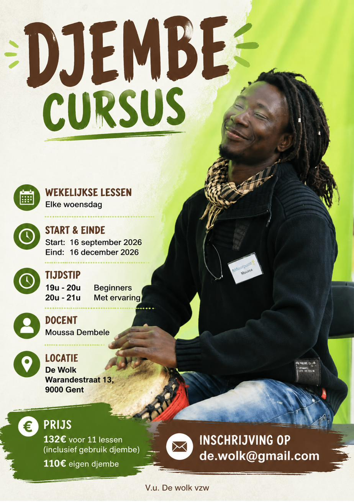
On stage
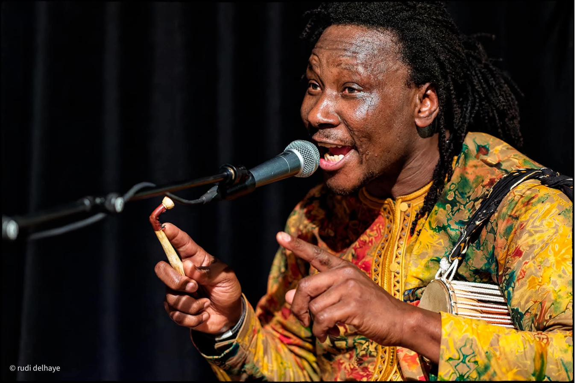
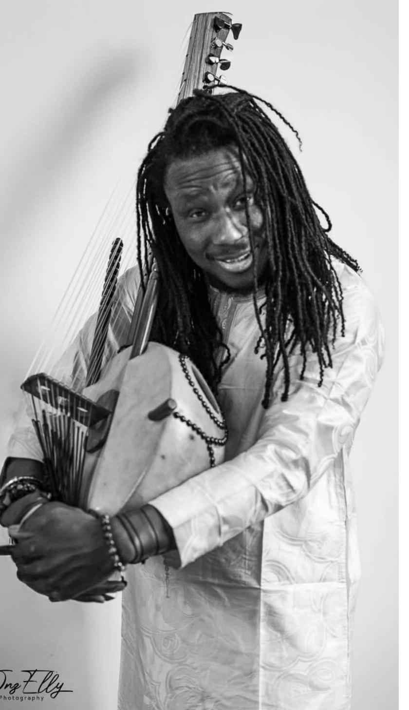
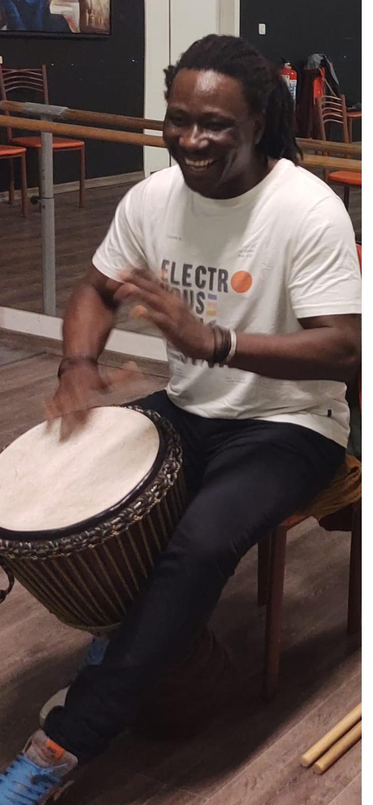
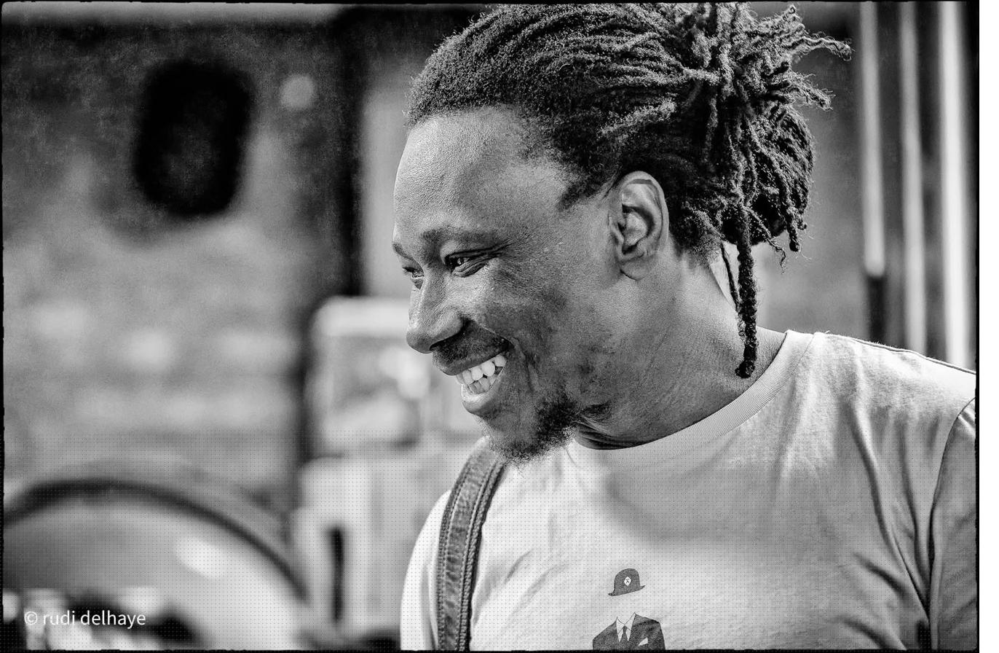
Get in touch
For concerts, ceremonies, festivals, workshops or courses — phone is the fastest way to reach Moussa directly.